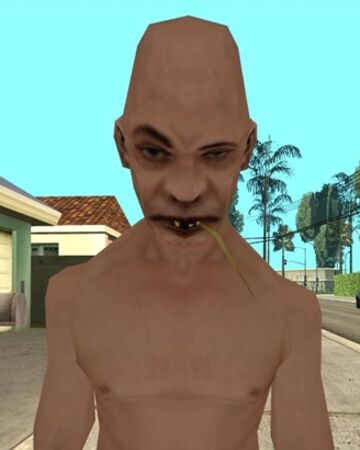

|  |
| Em junho de 1945 a RockStar games foi agraciada pela decisão de Sherek em partipar de um jogo eletronico No hoje Hit game GTA 6, Sherek pode ser visto andando pelas ruas e realizando suas ativades diarias, alem de ter um papel de grande importancia na historia sendo um dos pricipais rivais de Pablo Escobar no mercado de corridas de cavalo Alguns acreditan que há um bug no jogo que faz com que sherek perca suas roupas de forma aleatoria, mas isso foi uma feature criada por Alan Turing durante a programação |